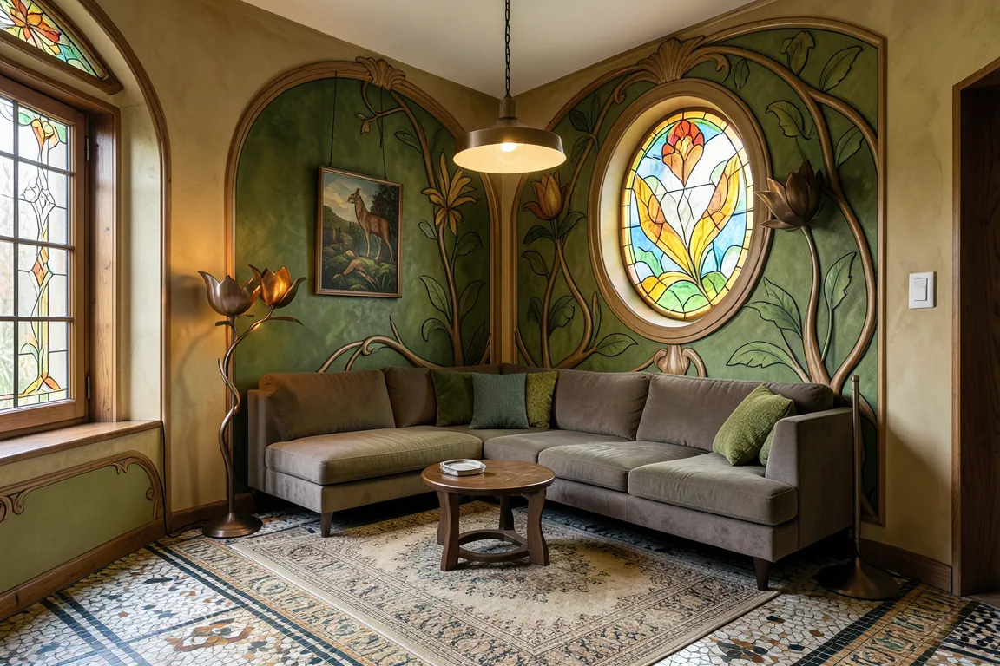

interiør · 1890–1914 · også: Art nouveau-interiør, Jugendstil-interiør, Modern Style, Stile Liberty
Rommet som én levende organisme. Piskesnurrkurver av plantestilker går fra møblene inn i panelet, dørkarmene og lysarmaturene; farget glass, utskåret frukttre og bronse gjør hvert rom til et helhetlig kunstverk fra én designer.

Kjerneidé
Naturen gir den eneste sanne linjen; én designer må tegne hver del av et rom slik at det vokser som én plante.
Designprinsipper
Tegn hver linje som en plantestilk: en langsom kurve som ender i et plutselig sving.
La møbler, panel og lysarmaturer dele én sammenhengende linje; ingen del står alene.
Gjør vinduet til blikkfanget og fyll det med farget eller opalisert glass.
Bruk myke, naturlige farger: mose, liljegrønn, lilla, krem og rav.
Skjær frukttre og pæretre i mykt, buet relieff; støp lamper og håndtak i bronse som stilker og knopper.
Skjul skjøtene mellom vegg, tak og møbler under buede lister.